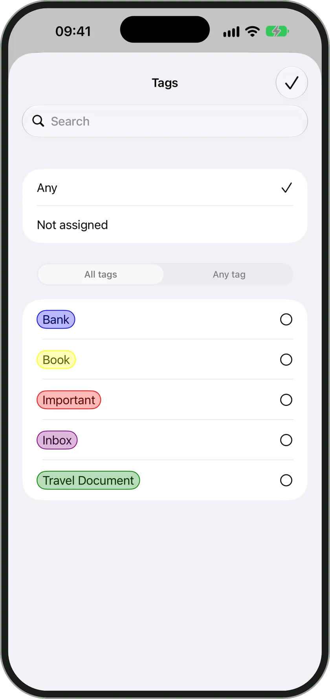
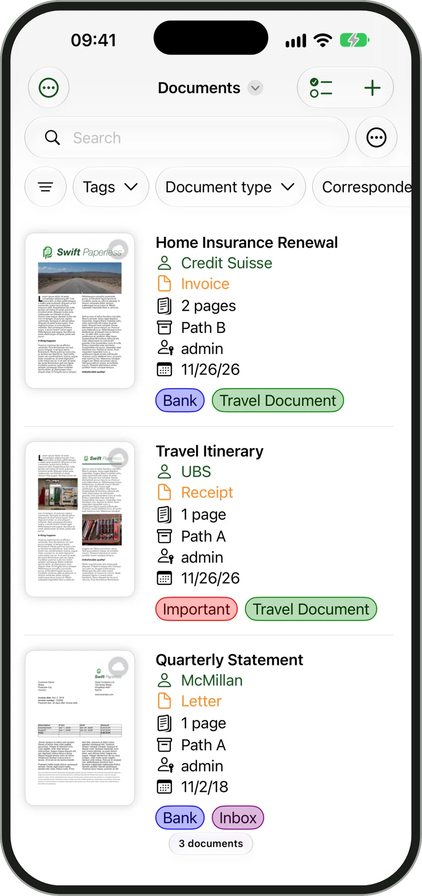
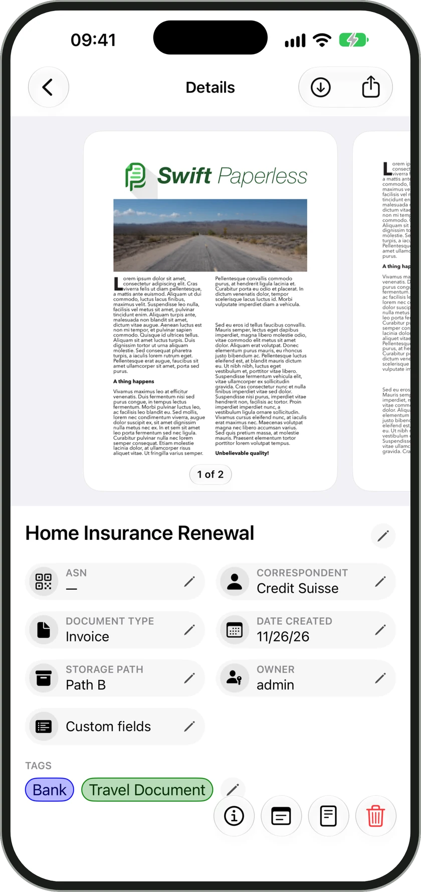

An iPhone app for Paperless-ngx
Browse, search, edit and upload documents on your own Paperless-ngx server.

Free · Open source (MIT) · iOS 17 or later · Needs a self-hosted Paperless-ngx server



What the app does
Search and filter
Title or full-text search. Filter by tag, document type, correspondent, storage path and custom fields, and open your saved views.
Read and share
Preview PDFs and images, read notes, see documents that share the same file, and send the file to any app.
Edit metadata
Change title, date, tags (nested tags too), correspondent, document type, storage path, ASN and custom fields.
Add documents
Scan with the camera, import files, or send them from other apps through the share sheet and from Shortcuts. Per-server default tags apply to uploads.
Several servers
Add more than one server and switch between them. Sign in with a password, OIDC (with TOTP codes) or a client certificate.
App lock and inbox
Lock the app with Face ID or Touch ID. Work through your inbox and clear its tags from the document screen. Deleted documents go to the trash.
New in 1.11
Offline browsing
Documents are kept on the device with their notes and thumbnails, so they open without a connection. Each server has its own setting. Release notes
Recently browsed
The default. Documents you have opened stay available offline, along with your main document list.
Entire library
Downloads everything in the background, also while the app is closed. Stays on Wi-Fi unless you allow cellular, and pauses when storage is low.
Keep offline
Pin single documents or whole saved views. They download right away, are never removed to free space, and follow new versions from the server.
Before you install
Swift Paperless is a client. It does nothing on its own: you need a running Paperless-ngx server that your device can reach.
- Server
- Paperless-ngx 1.14.1 or later. Supported versions
- Devices
- iPhone and iPad with iOS 17 or later
- Price
- Free, with an optional tip jar
- Privacy
- Documents are fetched from your server only. Privacy policy
- Source
- MIT licence, on GitHub
- Languages
- Translated by volunteers. Help on Crowdin